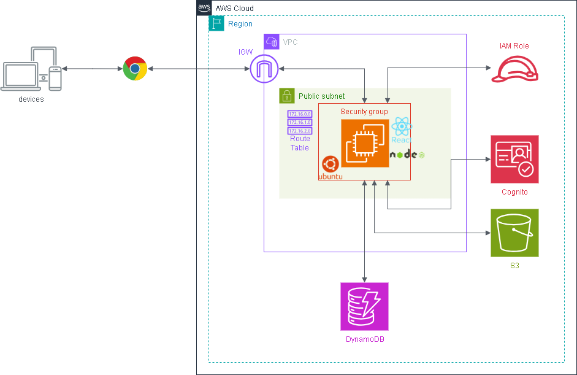

DynamoDB セットアップ手順（Phase 3 ハンズオン）¶
作成日: 2026-05-10 更新日: 2026-05-10（環境イメージ・用語集・仕組みの説明を追加）
対象: AWS未経験者向けハンズオン（3回目）
完成後イメージ¶


環境イメージ¶
graph TB
User["👤 ユーザー\n（ブラウザ）"]
subgraph AWS["AWS クラウド (ap-northeast-1)"]
Cognito["🔐 Amazon Cognito\nhandson-user-pool"]
subgraph VPC["VPC: handson-vpc (10.0.0.0/16)"]
subgraph Subnet["パブリックサブネット: handson-public-subnet"]
subgraph EC2Box["EC2インスタンス (Ubuntu 24.04 / t2.micro)"]
FE["React フロントエンド\n(ビルド済み静的ファイル)"]
BE["Node.js + Express バックエンド\n(ポート 3000)"]
FE -->|"画面操作 → APIリクエスト"| BE
end
end
end
IAM["IAMロール\nhandson-ec2-role\n(S3FullAccess + DynamoDBFullAccess)"]
S3["🪣 S3 バケット\nhandson-[名前]-files"]
DDB["🗄️ DynamoDB\nhandson-reviews"]
IAM -.->|アタッチ| EC2Box
BE -->|"AWS SDK v3\nファイルの読み書き"| S3
BE -->|"AWS SDK v3\nレビューの読み書き"| DDB
BE -->|"JWKS で JWT 検証"| Cognito
end
User -->|"① レビュー投稿\n（認証不要）"| EC2Box
User -->|"② ログイン → JWT 取得"| Cognito
User -->|"③ JWT付きでレビュー一覧・ファイル操作"| EC2Box
ゴール¶
ログイン不要でレビューを投稿でき、ログイン後にレビュー一覧・詳細が見られるアプリを動かす。
全体の流れ¶
[1] DynamoDB テーブル作成
↓
[2] IAMロールに DynamoDB 権限を追加
↓
[3] バックエンドの .env 設定
↓
[4] EC2でアプリを更新・起動
↓
[5] ブラウザで動作確認
AWS 用語集（手順を始める前に読んでおこう）¶
Phase 1・2 の用語集に加えて、Phase 3 で新たに登場する言葉を解説する。
DynamoDB¶
Amazon DynamoDB¶
AWS が提供するフルマネージドの NoSQL データベース。 サーバーの管理が不要で、データが自動的にスケールする。 今回はレビューデータの保存・取得に使う。
無料枠: 25GB ストレージ・読み書き25ユニットまで永続無料（12ヶ月制限なし）。
テーブル¶
DynamoDB でデータを入れる「箱」。RDB のテーブルに相当するが、スキーマ（列の定義）が不要。
アイテム¶
テーブルに保存されるデータの1件。RDB の「行」に相当。
属性¶
アイテムの中の各フィールド。RDB の「列」に相当するが、アイテムごとに異なる属性を持てる。
パーティションキー（PK）¶
アイテムを一意に識別するキー。今回は reviewId（UUID）を使う。
DynamoDB はこのキーをもとにデータを分散保存する。
今回のテーブル設計:
reviewId（PK） │ rating │ comment │ userName │ createdAt
───────────────┼────────┼─────────┼──────────┼──────────
abc-123... │ 4 │ 良かった │ 田中 │ 2026-05-10T...
def-456... │ 5 │ 最高！ │ ゲスト │ 2026-05-10T...
Scan¶
テーブルの全アイテムを読み込む操作。 データ量が多いと遅くなるが、学習用途では問題ない。 今回のレビュー一覧取得に使う。
PutItem¶
テーブルにアイテムを追加（または上書き）する操作。 今回のレビュー投稿時に使う。
GetItem¶
パーティションキーを指定してアイテムを1件取得する操作。 今回のレビュー詳細表示時に使う。
認証制御¶
公開エンドポイントと保護エンドポイント¶
今回のアプリは API によって認証の要否を切り替えている。
| エンドポイント | 認証 | 理由 |
|---|---|---|
POST /api/reviews |
不要 | 誰でもレビュー投稿できる |
GET /api/reviews |
必要（JWT） | ログイン済みユーザーのみ閲覧できる |
GET /api/reviews/:id |
必要（JWT） | 同上 |
GET/POST/DELETE /api/files |
必要（JWT） | Phase 2 から継続 |
コード用語集（手順を始める前に読んでおこう）¶
AWS SDK for DynamoDB¶
@aws-sdk/lib-dynamodb（DocumentClient）¶
DynamoDB を扱いやすくするラッパーライブラリ。
通常の DynamoDB SDK はデータ型を { S: "文字列" } や { N: "42" } のように明示する必要があるが、
DocumentClient を使うと JavaScript のオブジェクトをそのまま読み書きできる。
// DocumentClient なし（冗長）
{ reviewId: { S: "abc-123" }, rating: { N: "4" } }
// DocumentClient あり（シンプル）
{ reviewId: "abc-123", rating: 4 }
randomUUID¶
Node.js 組み込みの関数で、UUID（世界でほぼ一意の文字列）を生成する。 外部ライブラリ不要で使える。
レビューの reviewId はこれで生成する。
仕組みの説明（学習者向け）¶
sequenceDiagram
participant B as ブラウザ
participant E as EC2バックエンド
participant C as Cognito
participant D as DynamoDB
Note over B,D: ① レビュー投稿（認証不要）
B->>E: POST /api/reviews<br/>{ rating: 4, comment: "良かった" }
E->>D: PutItem（reviewId を生成して保存）
D-->>E: 保存成功
E-->>B: 201 { reviewId: "abc-123" }
Note over B,D: ② レビュー一覧取得（認証必要）
B->>C: email + password でログイン
C-->>B: JWT（idToken）を発行
B->>E: GET /api/reviews<br/>Authorization: Bearer [JWT]
E->>C: JWKS で公開鍵を取得・JWT を検証
E->>D: Scan（全アイテムを取得）
D-->>E: レビュー一覧
E-->>B: レビュー一覧を返すポイント: - レビュー投稿は JWT なしで EC2 → DynamoDB に直接書き込む - レビュー一覧はバックエンドが JWT を検証してから DynamoDB に問い合わせる - EC2 は IAMロールの権限で DynamoDB にアクセスする（アクセスキー不要）
[1] DynamoDB テーブル作成¶
- AWSマネジメントコンソール → 「DynamoDB」を開く
- 「テーブルを作成」をクリック
- 以下を設定:
| 項目 | 設定値 |
|---|---|
| テーブル名 | handson-reviews |
| パーティションキー | reviewId（型: 文字列） |
| ソートキー | 設定しない |
| テーブル設定 | デフォルト設定 のまま |
- 「テーブルを作成」をクリック
- ステータスが「アクティブ」になるまで待つ（1〜2分）
[2] IAMロールに DynamoDB 権限を追加¶
Phase 1 で作成した handson-ec2-role に DynamoDB へのアクセス権限を追加する。
- AWSマネジメントコンソール → 「IAM」を開く
- 左メニュー「ロール」→
handson-ec2-roleをクリック - 「許可を追加」→「ポリシーをアタッチ」
- 検索欄に
AmazonDynamoDBFullAccess_v2と入力 AmazonDynamoDBFullAccess_v2にチェックを入れて「許可を追加」
本番環境では最小権限にすること ハンズオンでは学習のため FullAccess を使うが、本番では 特定のテーブルへの読み書きのみに絞ったカスタムポリシーを使う。
[3] バックエンドの .env 設定¶
まず EC2 に SSH 接続し、root に切り替えて最新コードを取得する:
phase03/ フォルダが表示されれば取得成功。
実行場所: ~/samurai-repo/phase03/backend
以下のように書き換える（Cognito の値は Phase 2 と同じ）:
S3_BUCKET_NAME=handson-yamada-files
COGNITO_USER_POOL_ID=ap-northeast-1_xxxxxxxx
COGNITO_CLIENT_ID=xxxxxxxxxxxxxxxxxxxxxxxxxx
DYNAMODB_TABLE_NAME=handson-reviews
保存して終了: Ctrl + O → Enter → Ctrl + X
フロントエンドの .env も設定する:
保存して終了: Ctrl + O → Enter → Ctrl + X
[4] EC2でアプリを更新・起動¶
実行場所: ~/samurai-repo（[3] の続き。すでに root かつ git pull 済みの前提）
cd ~/samurai-repo
# フロントエンドをビルド
cd phase03/frontend
npm install
npm run build
# バックエンドをセットアップ・起動
cd ../backend
npm install
npm run build
npm start
以下のように表示されれば起動成功:
[5] ブラウザで動作確認¶
ブラウザで以下にアクセス:
動作確認チェックリスト¶
ログイン前（公開）:
- [ ] 画面上部にナビゲーションバーが表示される
- [ ] 「レビュー投稿」「レビュー一覧🔒」「ファイル管理🔒」のタブが見える
- [ ] レビュー投稿フォームが表示される
- [ ] 名前を入力しなくても投稿できる（「ゲスト」として登録される）
- [ ] 星（1〜5）を選択してコメントを入力し「投稿する」を押すと成功メッセージが出る
- [ ] DynamoDB コンソールで handson-reviews テーブルにデータが追加されている
- [ ] 「レビュー一覧🔒」をクリックするとログイン画面に遷移する
- [ ] 「← レビュー投稿に戻る」ボタンで戻れる
ログイン後（保護）: - [ ] ログイン後にヘッダーにメールアドレスが表示される - [ ] 「レビュー一覧」に遷移できる - [ ] 投稿したレビューが一覧に表示される - [ ] レビューをクリックすると詳細が表示される - [ ] 「← 一覧に戻る」ボタンで戻れる - [ ] 「ファイル管理」に遷移して Phase 2 と同様に操作できる
トラブルシューティング¶
レビュー投稿で「レビューの投稿に失敗しました」が表示される¶
バックエンドのターミナルに [DynamoDB PutItem Error] が出ている場合、原因として多いのは:
.envのDYNAMODB_TABLE_NAMEが間違っている- IAMロールに DynamoDB 権限が付いていない
IAMロールの確認:
TOKEN=$(curl -s -X PUT "http://169.254.169.254/latest/api/token" -H "X-aws-ec2-metadata-token-ttl-seconds: 21600")
curl -s -H "X-aws-ec2-metadata-token: $TOKEN" http://169.254.169.254/latest/meta-data/iam/info
"Code" : "Success" が返り、ロール名が表示されれば IAMロールは認識されている。
その場合は IAM コンソールで AmazonDynamoDBFullAccess_v2 がアタッチされているか確認する。
レビュー一覧が空で表示される¶
- DynamoDB コンソールで
handson-reviewsテーブルを開き「アイテムを探索」でデータが入っているか確認 - データがある場合は認証トークンの問題 → ログアウトして再ログイン
ハンズオン終了時の注意¶
EC2を停止する手順は Phase 1 と同じ。 DynamoDB は停止不要（無料枠：25GB・読み書き25ユニットまで永続無料）。